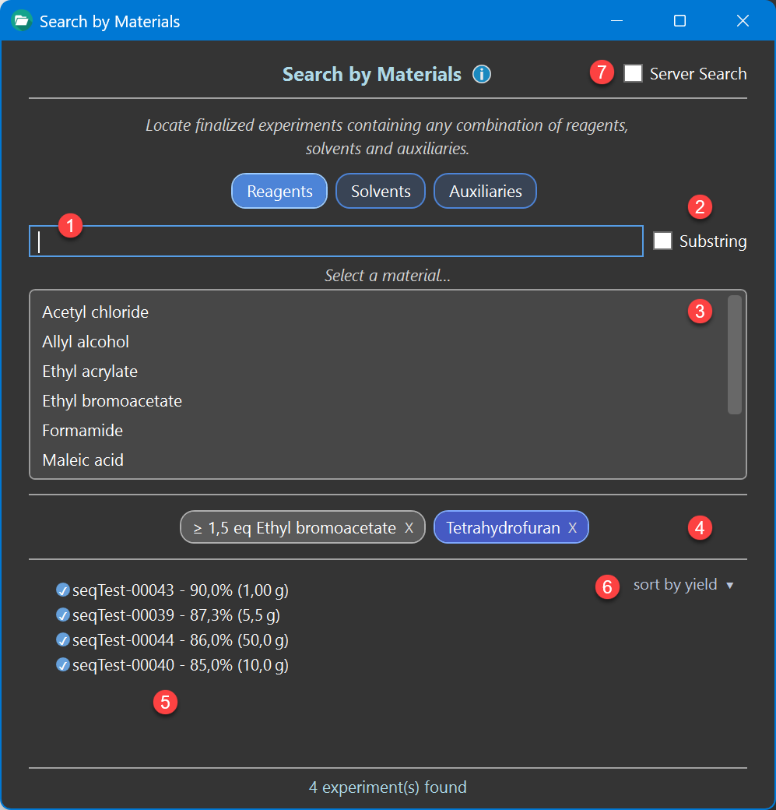
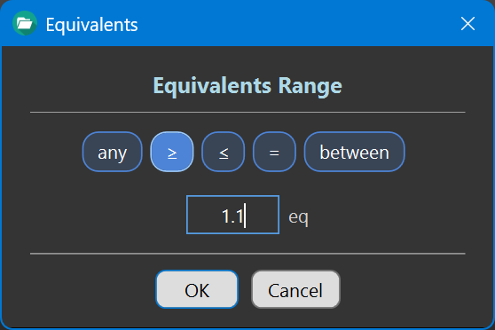

Materials Search
Introduction
Materials Search lets you locate experiments by the materials they utilize - any combination of reagents, solvents and auxiliaries, optionally restricted to a given amount range. It is accessible from the main toolbar:
Search → Materials ...
As with all search functions except tag search, only finalized experiments are included in the results — unfinalized ones are treated as work in progress. Clicking an experiment hit in the results opens it in the protocol for examination.

Selecting a Material
First choose the material category you are looking for — Reagents, Solvents or Auxiliaries. The list below ❸ shows all material names of the selected category used by the experiments of the currently searched database, so it contains only names that can actually produce a hit.
Type into the locate field ❶ above the list to narrow down. By default the typed text has to match the beginning of a material name. Check Substring ❷ to also find the search characters anywhere within a name (at least two characters are required in this mode).
Example : Typing 'eth' finds 'Ethanol' and 'Ethyl acetate'; with Substring checked, it also finds 'Triethylamine'.
Click a material in the list to add it as a search filter. It appears as a label below the list ❹, using the same color coding as the protocol (gray for reagents, blue for solvents, dark orange for auxiliaries), and the results list updates immediately.
Combining Filters
Any number of search filters up to a maximum of 10 can be added, freely mixed across the three categories. An experiment is listed only if it contains all of the added materials. Adding another filter therefore always narrows the result list.
Example : 'Triethylamine' + 'Dichloromethane' + 'Silica gel' finds all experiments in which all three materials are present.
Multiple materials of the same category can be added, adding the same material twice has no effect. To remove a search filter, click the X on its label.
Restricting the Equivalents
By default a filter matches any equivalents of the material. To restrict these, click the filter label to open the amount dialog, where the equivalent search ranges can be specified:

- any - equivalents are not considered
- at least (≥) / at most (≤) / exactly (=) a given value
- between a lower and an upper value
Amounts are always expressed in equivalents relative to the reference reactant: eq for reagents, volume equivalents vq for solvents and weight equivalents wq for auxiliaries. Because these equivalents are maintained for every material, the filter works regardless of whether the amount was originally entered in equivalents, grams or milliliters.
The material label reflects the current setting, e.g. '≥ 1.5 eq Triethylamine' or '3-10 vq Dichloromethane'. Clicking the label again lets you adjust the range at any time.
Example : '≥ 1.5 eq Triethylamine' finds all experiments using at least a 1.5-fold excess of triethylamine.
Results
The number of matching experiments is shown below the result list ❺. At most 200 experiments are listed at a time — refine the query with additional filters or an amount range to get a more specific result.
The dropdown ❻ determines the listing order, either by yield or by scale (the amount of reference reactant used), highest first. This makes it easy to spot, for example, the best-yielding or the largest-scale experiment among the hits.
Local and Server Search
If connected to the ELN server database, check Server Search ❼ to search all shared experiments of the server database instead of your local ones. The added filters remain in place and are simply re-evaluated against the newly selected database. The checkbox is disabled when no server is configured or currently unavailable.